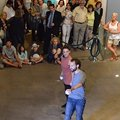
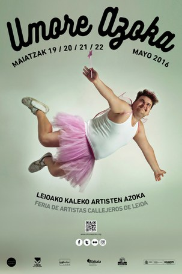

Circo, danza, poesía
Compañía
Espectáculos
Multimedia y Clipping
Calendario
Contacto
Castellano
English
Imágenes
Vídeos
Clipping

Son Recuerdos Calle
Aware
Son Recuerdos Sala
Fuera de Stock (coproducción Edu Manazas)
Son Recuerdos Calle
Solo Mazas
Puedes encontrar más vídeos
aquí.
El Periódico de Aragón, 15-11-2015
Diario del Alto Aragón, 26-09-2017
Your browser does not support the video tag.
Antena Aragón, 16-01-2017
Heraldo de Aragón, 29-06-2014
El Periódico de Aragón, 22-05-2015
Artez (número 199), Septiembre 2014
Your browser does not support the video tag.
TVE, 26-09-2017
Heraldo de Aragón, 29-05-2017
Your browser does not support the video tag.
La Xarxa (Fira Mediterrània Manresa), 09-10-2016
El periódico de Aragón, 19-04-2015
Heraldo de Aragón, 11-11-2014
Malabares en su Tinta, 22-06-2014
Europa Press, 27-06-2014
Your browser does not support the video tag.
Antena Aragón, 25-09-2017
El Periódico de Aragón, 08-09-2017
Heraldo de Aragón, 04-02-2017
Your browser does not support the video tag.
Radio Huesca, 29-09-2015
Malabares en su Tinta, 17-05-2015

Dantzan, 17-05-2016
AMZ Creando Circo, 28-01-2014
AraInfo, 19-05-2016


 con motivo del Mercado de Artes Escénicas, Septiembre 2014")


{kind=link}
{kind=link}
{kind=link}
{kind=link}
{kind=link}
{kind=link}
{kind=link}
{kind=link}
{kind=link}
{kind=link}
{kind=link}
{kind=link}
{kind=link}
{kind=link}
{kind=link}
{kind=link}
{kind=link}
{kind=link}
{kind=link}
{kind=link}
{kind=link}
{kind=link}
{kind=link}
{kind=link}
{kind=link}
{kind=link}
{kind=link}